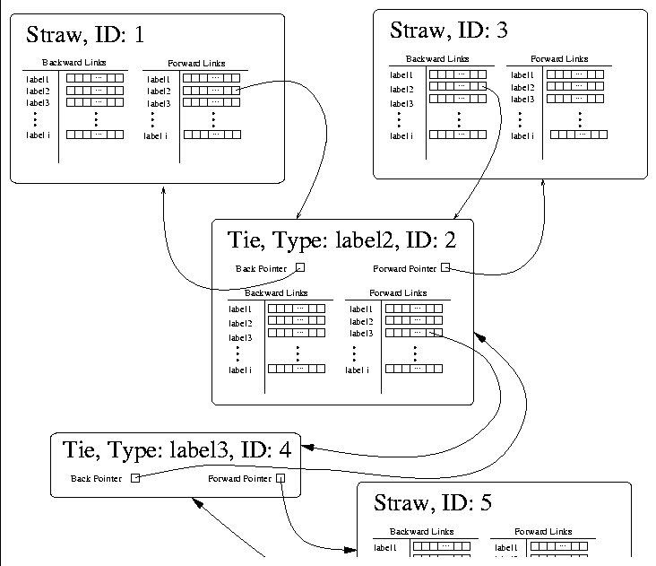

TieWeavable provides the following methods:
setForward, setBack, getForward, and
getBack. Ties are different than standard
Straws in one major way: in their jobs as links they connect
two, and only two nodes. While it is possible to add fields to
Ties (such as needle.Creator, or
needle.Comment), Ties maintain a single back pointer
and forward pointer that is seperate from the StrawTie
objects. This idea is represented in Figure  .
Ties override the get...Links() functions of
Straw so that they will not only include the links held within their
StrawTies but also the link held within their ``specialty''
pointer field. In the sample figure, a Straw (1) points
another Straw (3) by means of a Tie (2). The label
used within the two Straws matches the type of the
Tie. Similarly, the Tie (2) is connected to another
Straw (5) by means of yet another Tie (4).
.
Ties override the get...Links() functions of
Straw so that they will not only include the links held within their
StrawTies but also the link held within their ``specialty''
pointer field. In the sample figure, a Straw (1) points
another Straw (3) by means of a Tie (2). The label
used within the two Straws matches the type of the
Tie. Similarly, the Tie (2) is connected to another
Straw (5) by means of yet another Tie (4).

Figure: A
sample Tie cluster.
The benefit of the single back/forward pointer property is that it disambiguates the intention of the Tie. It is easy to determine what nodes the link connects and what nodes are associated with the link in some other way (as before, the example is a comment on the link).